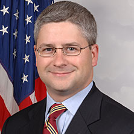

<div id="speakers">
<div class="cell">
<p>Rep. <strong>Patrick McHenry</strong> is serving his fifth term in the United States Congress where he represents the citizens of North Carolina’s 10th District.  Congressman McHenry’s district comprises seven counties in western North Carolina, from the suburbs of Charlotte to Asheville in the Blue Ridge Mountains.</p>

<p>In the 113th Congress, McHenry serves as the Chief Deputy Whip, a position he was selected to Majority Whip Steve Scalise (LA-01) on June 26th, 2014.  Assuming the Chief Deputy Whip position on August 1st, 2014, McHenry directly assists Majority Whip Scalise by leading a team of five Senior Deputy Whips and helping to manage the legislative priorities of Congressional Republicans on the House floor.</p>

<p>Congressman McHenry is a member of the House Financial Services Committee, where he serves as Chairman of the Oversight and Investigations Subcommittee.  In this role, the Congressman provides oversight of the Federal Reserve, Treasury, the Federal Deposit Insurance Corporation, the Securities and Exchange Commission, the National Credit Union Administration, the Office of the Comptroller of the Currency, the Department of Housing and Urban Development, the Federal Housing Finance Agency, and the Export-Import Bank. He is also a member of the House Committee on Oversight and Government Reform.</p>

<p>Throughout his career, Congressman McHenry has been a vocal and effective advocate for the men and women who wear the uniform of our country.  He received awards from the North Carolina Chapters of the American Legion and Marine Corps League for his extensive work in bringing a veterans’ health care clinic to his district after nearly two decades of delay.  The National Guard presented Patrick McHenry with the Charles Dick Medal of Merit for his exceptional service to the North Carolina National Guard.</p>

<p>McHenry has been recognized as a leader of the conservative movement in America.  He shares the most conservative voting record in Congress on family values issues, according to National Journal.  Having never voted for a tax increase in his career, Congressman McHenry is continually recognized as a “Hero of the Taxpayer” by Americans for Tax Reform.</p>

<p>Congressman McHenry is the recipient of several additional awards including: the National Association of Manufacturing’s “Manufacturing Legislative Excellence” Award, the Small Business and Entrepreneurship Council's “Small Business Champion” Award, the U.S. Chamber of Commerce's “Spirit of Enterprise” Award, the 60 Plus Association’s “Guardian of Seniors’ Rights” Award, the Family Research Council’s “True Blue” Award, and Citizens Against Government Waste’s “Taxpayer Hero” Award.</p>

<p>Most importantly, Congressman McHenry continues to listen to the voters of the 10th District and act as their voice in Washington.  His main focus is to provide the highest level of constituent services at home in Western North Carolina.</p>

<p>Prior to being elected to Congress in 2004 at the age of 29, Patrick McHenry represented the 109th District in the North Carolina House of Representatives. He also served as Special Assistant to the Secretary of the U.S. Department of Labor, a post he was appointed to by President Bush. Patrick McHenry is a graduate of Ashbrook High School in Gastonia, N.C. and Belmont Abbey College, where he earned a Bachelor of Arts in History.  Congressman McHenry and his wife Giulia live in Denver, N.C. and worship at Holy Spirit Church.  On August 15th, 2014 Congressman McHenry and Giulia announced the birth of their first child, a daughter named Cecelia Rose.</p>
</div>
</div>